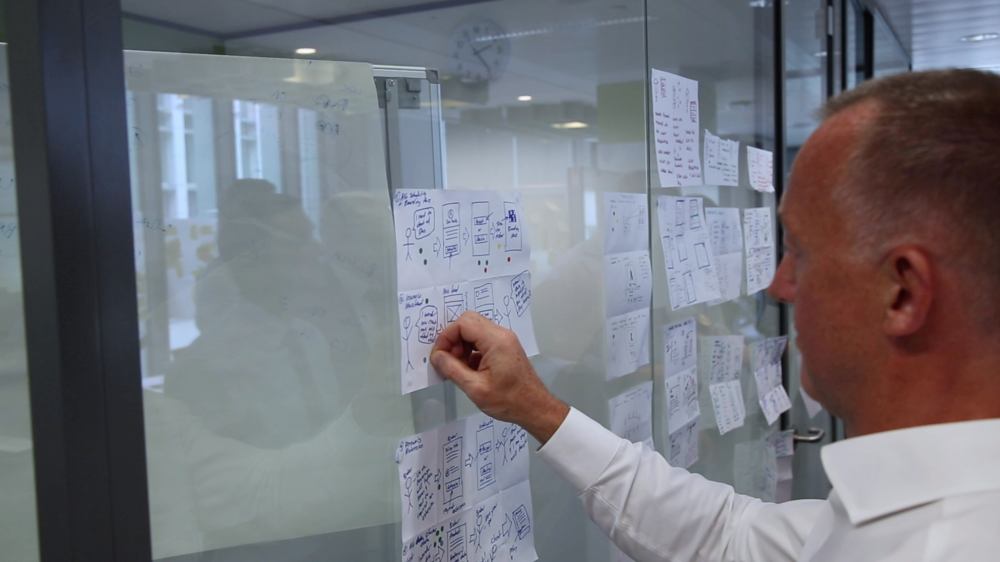
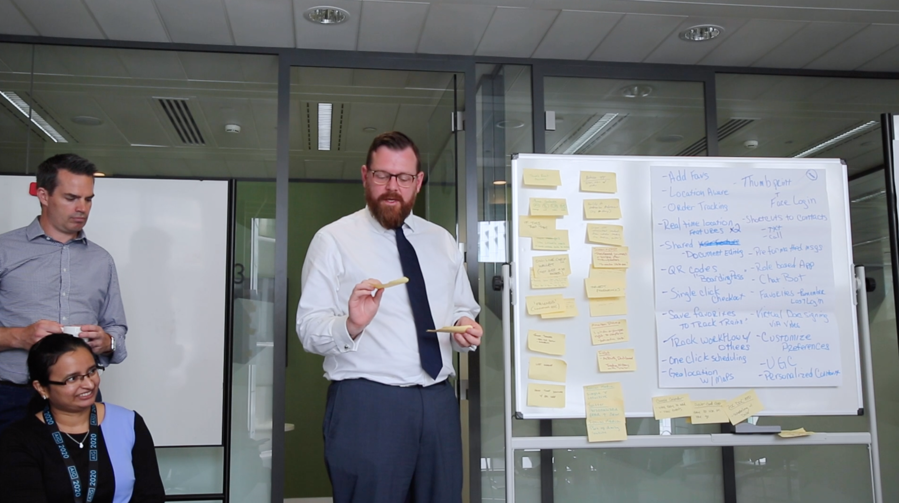
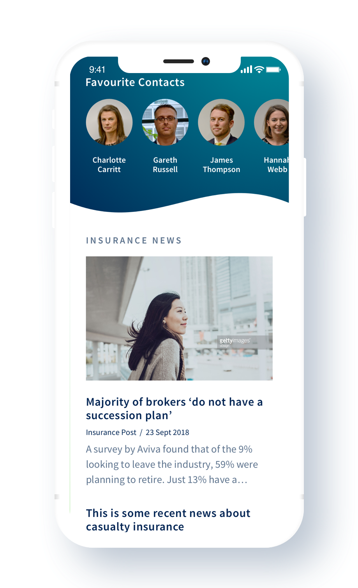
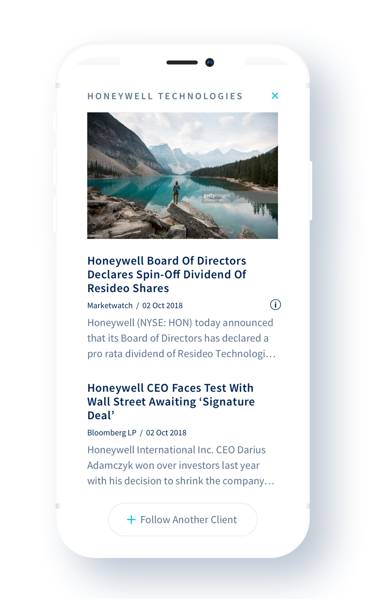
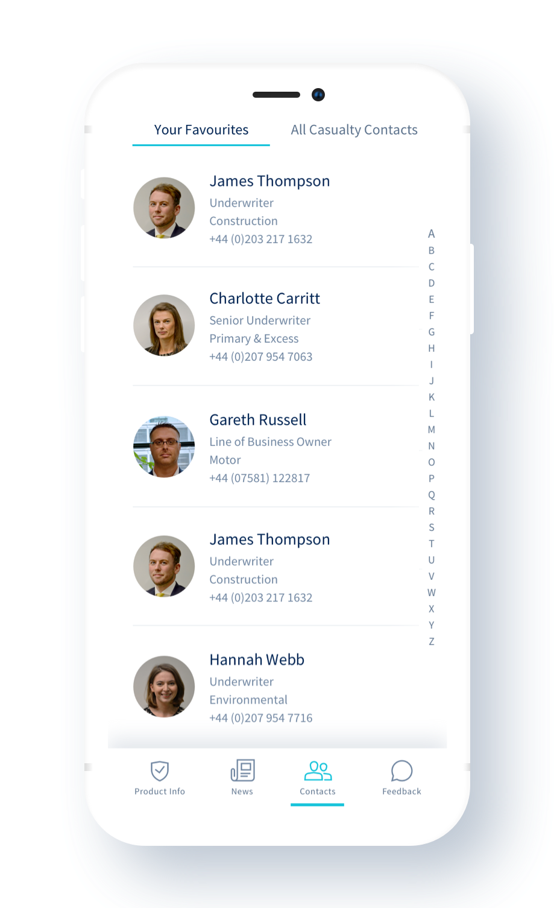
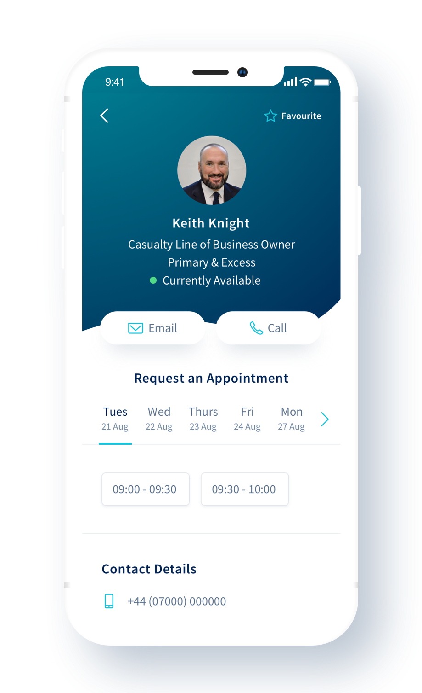
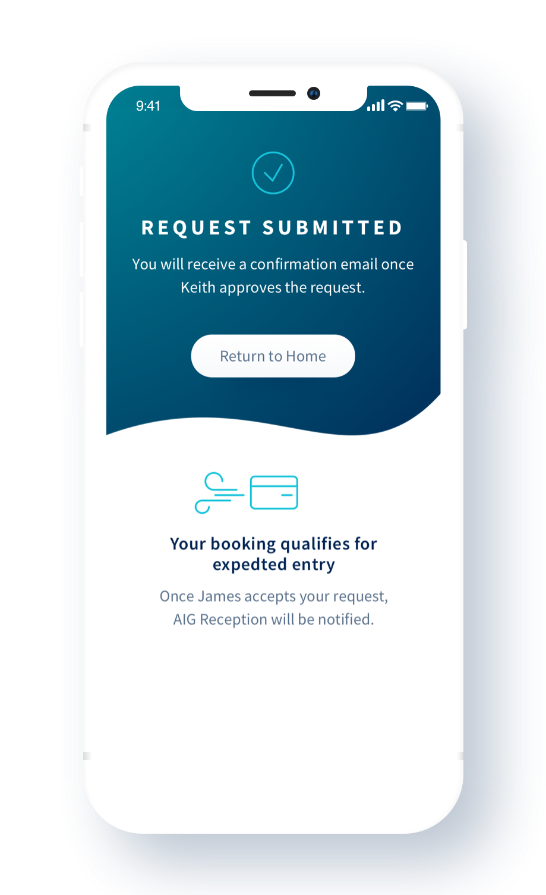
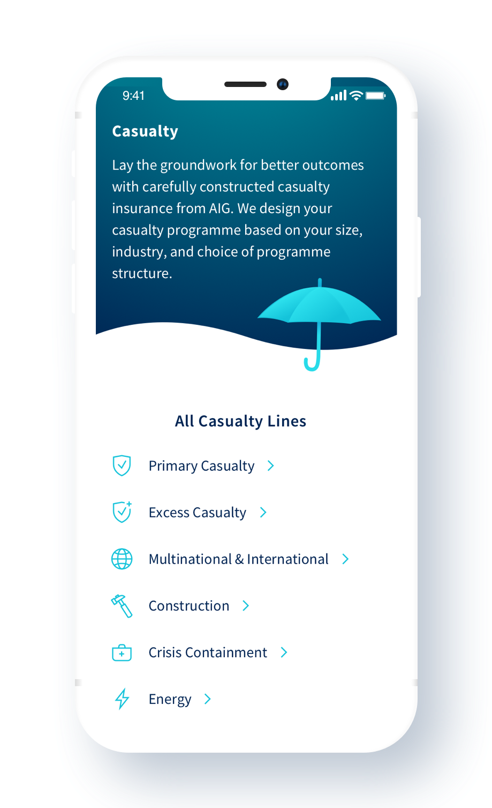
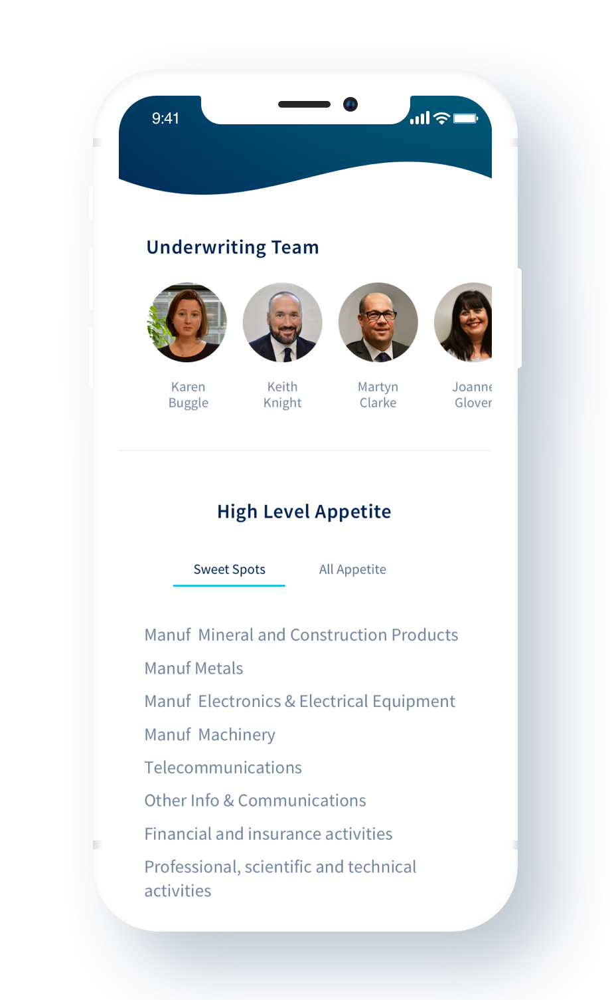

Simplified
A mobile app and ecosystem for commercial insurance.
The first broker-facing solution for a much larger ecosystem, was launched to London Market Casualty brokers in November 2018. At launch, the app and its underlying business structure made it easier for brokers and underwriters to do business together. Strong positive response resulted in the project being itemized by Anthony Baldwin, CEO of UK and EMEA, as one of the initial items in his 2019 budget.

Problem
Simplified began with feedback from AIG’s top broker partners. They identified lack of transparency and communication as a bottleneck in quoting, risk selection and closing new business opportunities. The ask “build a WhatsApp-like messaging tool” connecting brokers to underwriters.
However, my team immediately saw that a messaging tool alone wasn’t the solution. For one thing, willingness to use messaging apps for business was low, broker/underwriter relationships were seen as personal. For another, much of the lack of communication stemmed from back-end processes and tools that were opaque and time-consuming for both brokers and AIG’s underwriters
Solution
As a result, our focus changed from making a tool that enabled easier communication to one that automated low-value tasks and freed underwriters to focus on building relationships with brokers and increasing sales.
Using Lean & Agile methodologies, we focused on rapid rollout for a product that could deliver value and transparency to brokers and lighten the load on AIG's underwriters. The strategy was to launch a proof of concept to galvanize the larger AIG organization around its value.


Results
Within a single quarter we rolled out Simplified, version 1.0, complete with three key service improvements.
Newsfeed
Simplified leads with curated industry news and a personalized directory of contacts and support resources, making it easier for brokers to find and contact underwriters.


Meeting Requests and Fastpass
Simplified connects to calendars, so brokers can request a meeting when underwriters are available. Integration with Outlook delivers these request as invites which, upon acceptance, automatically trigger a notification to reception so Brokers can be registered in the system ahead of time.



Products and Appetite
Simplified includes a catalog of AIG commercial lines and key products. This lets brokers see product features and the underwriting teams that support them. And it provides valuable context, including claims scenarios and AIG’s business and risk goals by industry.


Since Launch of the Proof of Concept
Anthony Baldwin, CEO of UK and EMEA, has itemized this project as one of the initial items in his 2019 budget.
Team:
Elizabeth Heywood - Product Designer, Drew Burdick - Senior Product Designer, Kurt Flor - Producer, Amanda Cajano - Senior Producer, Brent Brooks - Head of Design